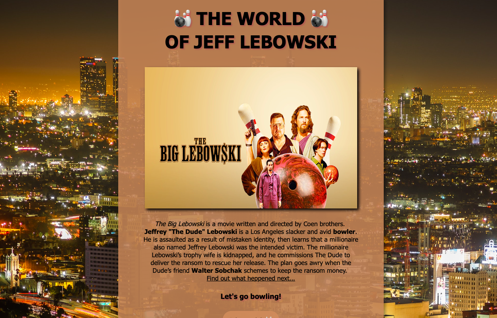
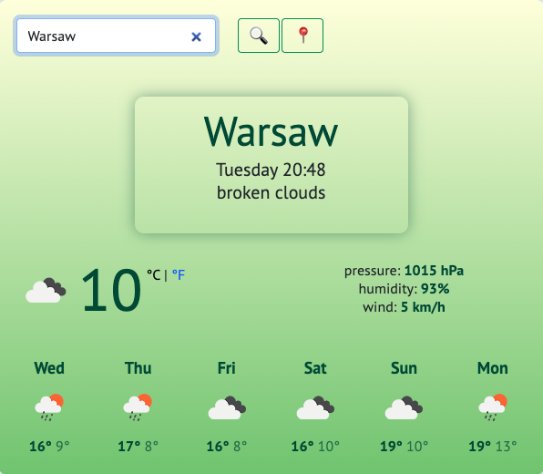

my projects
favorite movie
For my first project on passion, I chose one of my favorite movies "The Big Lebowski". The webpage was built with HTML and CSS. Don't you know what to watch today? Check the movie here.
weather app
The second project was about the creation of the weather application. I built it using HTML, CSS, JavaScript, and API. What's the weather like today? Check it here.
